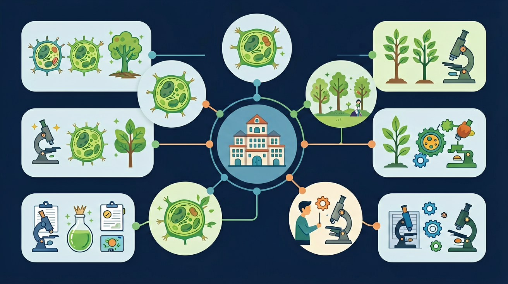

从细胞到生命体——探索生命结构的层次之美

🎯 能说出动物四大组织的名称及功能
🎯 能判断显微镜下植物组织的类型
🎯 能分析心脏中不同组织的协作关系
❓ 为什么皮肤破了会流血但指甲剪了不会疼？
❓ 植物也有'皮肤'吗？和动物的有啥不一样？
❓ 心脏跳动的力量到底来自哪种组织？
学完这一课，这些问题你都能自信地回答。
人体最广泛分布的组织是？
植物运输水分的组织是？
And：学生知道细胞是生命基本单位
But：不清楚细胞如何协作形成更复杂结构
Therefore：理解组织是细胞分化的结果
组织是由形态相似、功能相同的细胞联合形成的细胞群。比如你的皮肤被纸划伤时，表皮层中数百万个扁平上皮细胞会集体起到保护作用。动物有4种基本组织（上皮/结缔/肌肉/神经），植物也有4种（分生/保护/营养/输导）。就像班级里不同小组分工合作，细胞通过分化形成特定组织。
🌍 吃橘子时撕下的白色橘络就是输导组织，负责运输水分和营养。一根橘络里可能有上千条管状细胞并排工作。
下列哪项属于结缔组织？
And：学生已认识组织分类
But：不理解不同组织的结构如何适应功能
Therefore：建立结构与功能观
不同组织有独特的结构适应其功能：①上皮组织细胞排列紧密（如小肠绒毛上皮细胞表面有微绒毛，1平方毫米可达2000根），适合保护/吸收；②肌肉组织含肌纤维（骨骼肌纤维可长达30cm），适合收缩；③神经组织有突起（一个神经元可连接5000个其他细胞），适合传递信号；④结缔组织细胞间隙大（骨组织中空隙占体积20%），适合支持/连接。
🌍 举哑铃时，你的肱二头肌会增粗——这是因为肌肉组织中的肌纤维在锻炼中轻微撕裂后又修复增生。
仙人掌刺属于植物哪种组织？
And：学生理解单种组织的功能
But：不明白多种组织如何协同工作
Therefore：为学习器官层级做铺垫
器官是由不同组织有机结合形成的功能单位。以心脏为例：①心肌组织（占体积75%）负责泵血；②结缔组织形成瓣膜（每个瓣膜约重0.5g）防止血液倒流；③神经组织控制心跳节奏（每天约跳动10万次）；④上皮组织覆盖心腔内表面。就像工厂需要生产部、运输部、控制中心协同，器官需要多种组织配合。
🌍 吃辣时舌头灼热感——其实是辣椒素刺激了舌头上皮组织中的神经末梢，每秒向大脑发送约200个疼痛信号。
植物叶片中负责光合作用的组织主要是？
用分层蛋糕比喻组织构成器官（奶油=上皮组织，果酱=结缔组织）
神经组织像电话线传递信号，肌肉组织像橡皮筋收缩产生力
植物分生组织像'干细胞'，动物上皮组织像'防护服'
观察芹菜茎的纤维（厚壁组织）与番茄果肉（薄壁组织）对比
设计外星生物：需要哪些组织来实现运动/感知？
关于组织再生能力的正确叙述是
设计实验比较上皮组织与结缔组织的再生速度
先独立作答，再点选项查看对错与错因。
伤口初期渗出的淡黄色液体主要来自
新生的粉红色组织主要属于
下列哪项是结缔组织在修复中的作用
伤口愈合时，____组织最先完成再生覆盖创面
答案：上皮
上皮组织再生能力最强
真皮层中的____细胞会分泌胶原蛋白参与修复
答案：成纤维
这是结缔组织的主要修复细胞
✅ 对比植物/动物组织功能异同
💡 生活经验中植物结构认知模糊
✅ 强调结缔组织'连接'功能（如骨/血）
💡 名称中'结''上'字面误导
口诀：上皮保护结缔连，肌肉收缩神经传，分生营养输导全
类比：组织像乐高零件，不同组合拼出器官
中考真题：心脏中主导收缩的组织是？
迁移题：仙人掌刺属于哪种组织？
创新题：设计会发光的鱼，需要增加哪种组织？